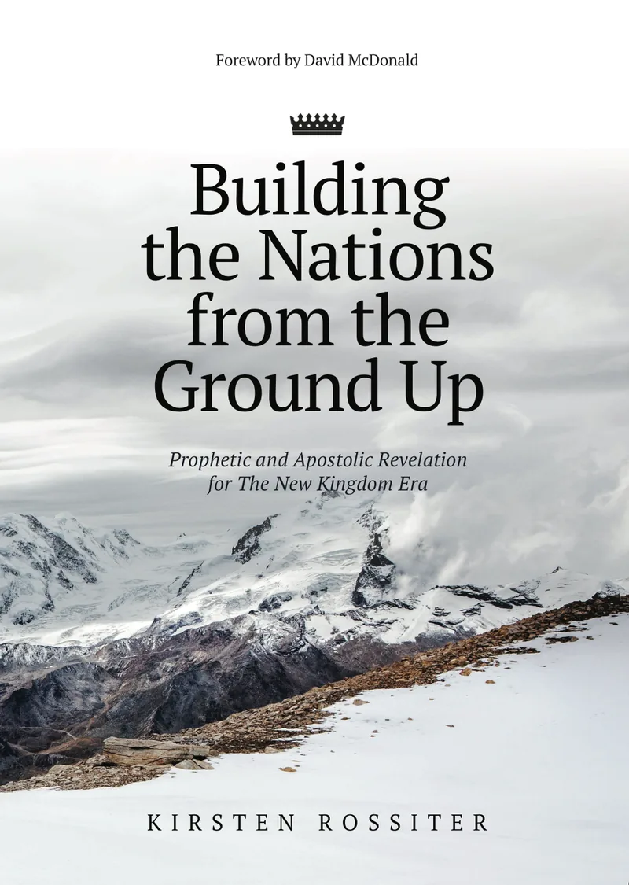

A new breed of prophetic-apostolic leaders is arising in this hour of intense global shaking. They will lead the nations out of slavery into freedom. Find out how you can become a catalyst of change as you partner with the Holy Spirit, bringing Heaven to earth wherever you are.

There’s a reset in the nations. Global systems are breaking. New grassroots ecosystems will build the nations from the ground-up. Quickly.
A new era is dawning for the church. She has entered her final reformation period, where she has become the mature Bride of Christ, partnered with her Bridegroom to rule and reign in the nations. Not confined, controlled or held back by church culture, traditions or theology, she operates in the place of intimacy with Christ, in the colourful fields of freedom.
Her mandate is to bring the nations out of slavery into freedom. To establish the Kingdom of God in all spheres of society and to usher His glory into our earthly realm.
Kirsten Rossiter is a recognised prophetic voice from South Africa. Operating with governmental authority, she unveils the purposes of God for His Ekklesia in this hour of the earth.
Qualified in graphic design and classical piano, an avid writer and visionary, she encourages and inspires others to be all they are called to be and to combine their diverse skills in building the Kingdom of God wherever they are. She challenges the way the church thinks, shedding revelational light on spiritual truth and presenting a creative approach that can effectively merge the spiritual with the natural. She is passionate about global reformation and transformation, both in the church and marketplace.
She challenges the way the church thinks—merging the spiritual with the natural, and the prophetic with the practical.
Kirsten is married to Warren, who is her ministry partner. Together, they operate as a prophetic-apostolic team, giving counsel, and sharing insight and revelation into specific situations where solutions are sought, both individually and corporately. They walk relationally with recognised prophetic-apostolic leaders, globally.
They live with their four children in England.
Prophetic and apostolic revelation for the new Kingdom era.
We are witnessing a shaking in the nations like never before, and the Ekklesia stands at the centre of all that is unfolding. This book unveils where the church falls on history's timeline, her call, and how she will fulfil her purpose to bring reformation and transformation in these last days.
A new breed of prophetic-apostolic leaders is arising—ones who will partner with the Holy Spirit to bring Heaven to earth wherever they are, connecting the spiritual with the natural and building God's Kingdom within every sphere of society.
Prophetic revelation, teachings, and reflections for the Bride and the nations—shared first through Kirsten's prophetic blog. Words to awaken, equip, and mobilise the Ekklesia for this hour.
The Lord showed me a picture of a circle within a circle. The resistance you've been feeling comes from crossing the outer band of defence around the territory you are called to - the fighting zone where territorial giants guard the land within. But the enemy cannot hold you back if you keep moving forward. You've reached the line that separates the band of defences from the land of your inheritance. Now is not the time to hesitate. It's time to advance.
Read the revelation →Receive new prophetic revelations, teachings, and ministry updates as they are released.
Words for the Bride and the nations—shared with intention, delivered straight to your inbox.
You're subscribed — welcome.